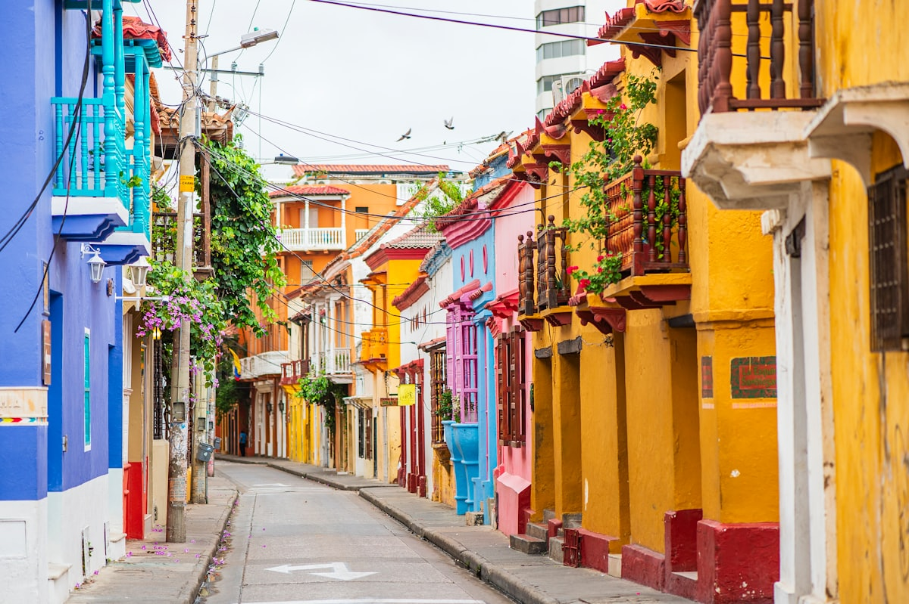
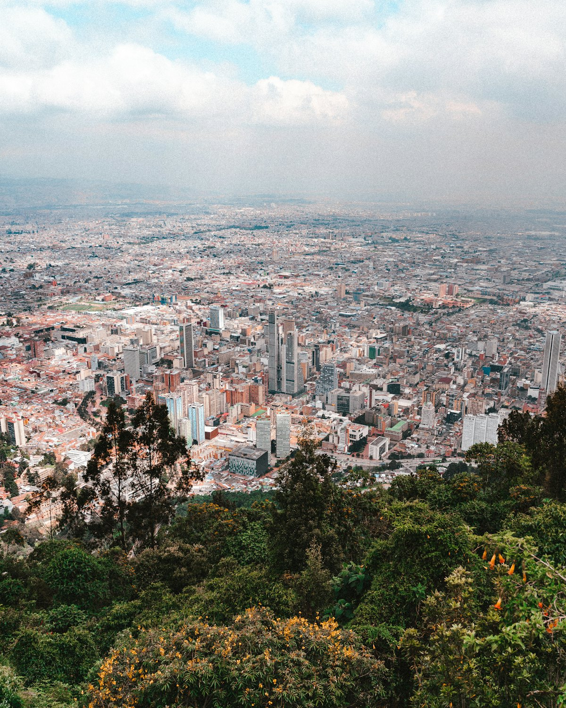
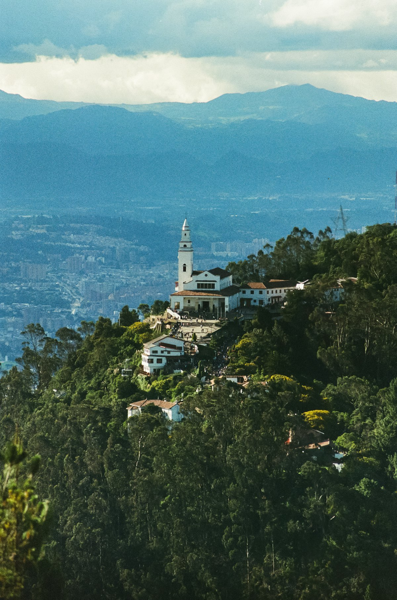
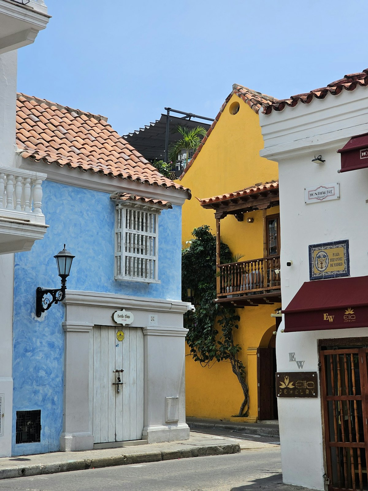
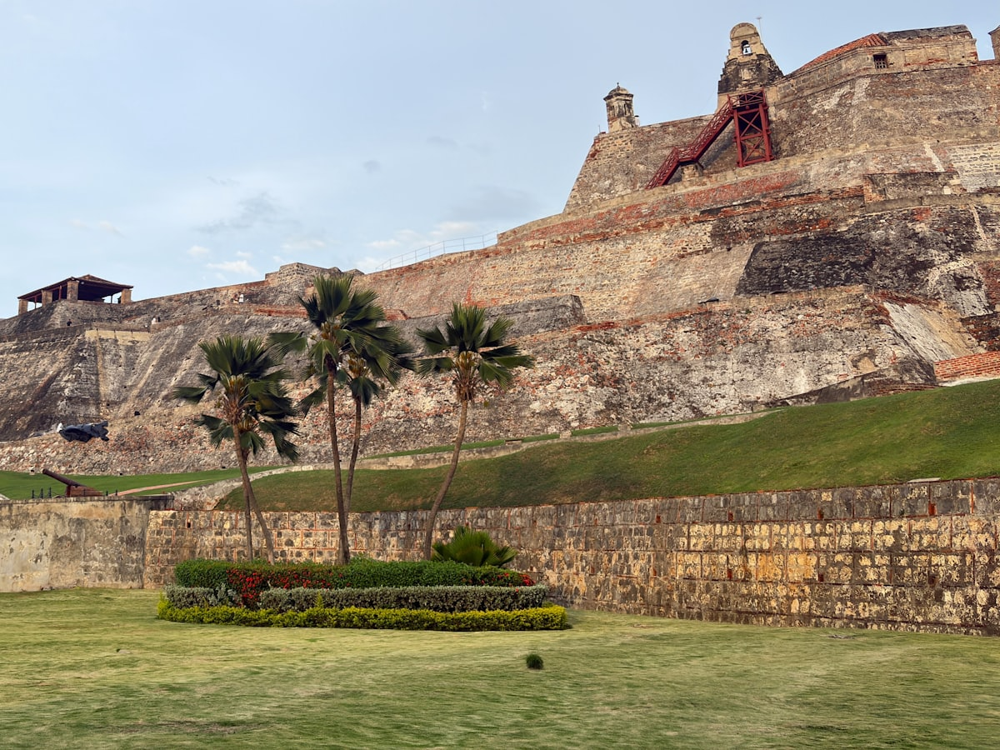
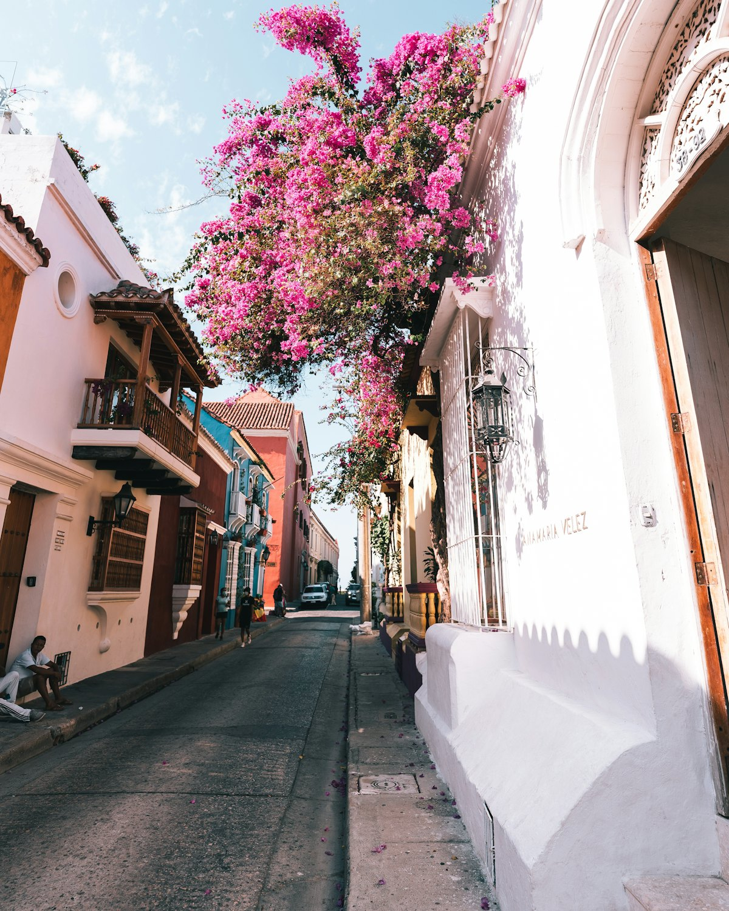
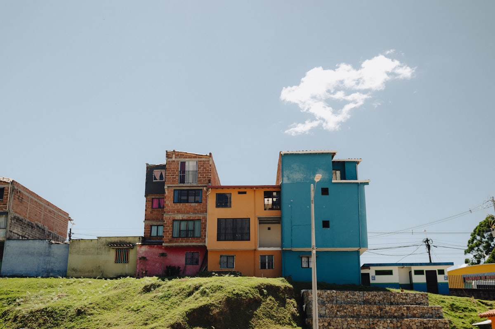
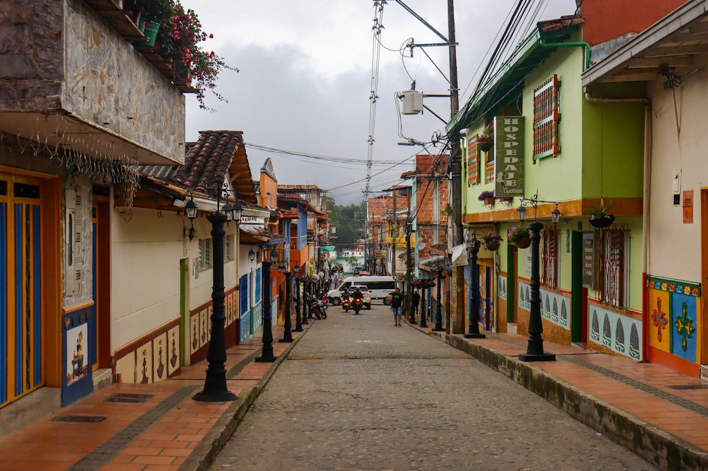

| 事项 | 结论 |
|---|---|
| 事项 | 结论 |
| 签证（最关键） | 中国护照需办 V 类旅游签证（电子签，约 50–100 美元，3–7 工作日）；持有效美国/申根签证（剩余超 180 天）可免签入境 90 天 |
| 时差 | 比北京慢 13 小时 |
| 电源 | 110V，A/B 型插座（两扁/圆孔），需转换头 |
| 货币 | 哥伦比亚比索 COP，1 元 ≈ 553 比索；信用卡普及，银联覆盖率低 |
| 推荐方案 | 波哥大 3 天 + 麦德林 2 天 + 瓜塔佩 1 天（麦德林日游）+ 卡塔赫纳 3 天 + 返程 1 天 |
| 行程链 | 北京 → 波哥大 → 麦德林 → 瓜塔佩 → 卡塔赫纳 → 北京 |
| 预算（人均） | 经济 15000–22000 ／ 标准 28000–42000 ／ 舒适 55000–80000（人民币） |
| 三件提前事 | ① 办签或确认美签/申根签 ② 订 3 段国内航班 ③ 卡塔赫纳老城住宿提前 2–3 周 |
以下为 10 天 9 晚的推荐节奏：波哥大高原适应 3 天，飞麦德林住 2 晚并把瓜塔佩做成日游，最后飞卡塔赫纳沉浸加勒比 3 天。每日主景点 ≤2 个，城市间以国内航班为主。
| 日期 | 行程 | 过夜地 | 主题 |
|---|---|---|---|
| D1 抵波哥大 | 北京✈波哥大（转机约 20h），入住 La Candelaria 老城，适应海拔 | 波哥大 | 抵达+适应 |
| D2 | 黄金博物馆 → 玻利瓦尔广场 → 博特罗博物馆 → 波特罗街区漫步 | 波哥大 | 高原人文 |
| D3 | 蒙塞拉特山缆车俯瞰全城 → 奥拓街市集/艺术区 | 波哥大 | 城市天际线 |
| D4 | 波哥大✈麦德林（约 1h）：Comuna 13 涂鸦楼梯 + 城市缆车 | 麦德林 | 城市复兴 |
| D5 | 博特罗广场 → 安蒂奥基亚博物馆 → 植物园 / 阿维公园 | 麦德林 | 艺术与绿洲 |
| D6 | 瓜塔佩日游：El Peñol 巨岩 740 级台阶 → 彩色小镇 | 麦德林 | 巨岩+彩色镇 |
| D7 | 麦德林✈卡塔赫纳（约 1h15）：老城徒步 + 圣费利佩城堡日落 | 卡塔赫纳 | 古城初访 |
| D8 | 罗萨里奥群岛出海一日：浮潜 + 白沙滩 | 卡塔赫纳 | 加勒比出海 |
| D9 | 盖茨曼尼街头艺术街区 → 城墙日落 / 海滩 | 卡塔赫纳 | 街头+城墙 |
| D10 返程 | 卡塔赫纳✈北京（转机约 20h+），回家 | — | 收尾 |
以下为 10 天全程的逐小时执行时间线，可当作「当天打开照着走」的清单。标注 ※ 的可选项视体力与天气取舍。
| 时间 | 事项 |
|---|---|
| 全天 | 北京✈波哥大（经巴黎/马德里/美西转机，总航程约 20h；美国转机需美签） |
| 抵达 | El Dorado 机场入境（持美签免签者出示签证与返程机票），市区约 30–40 分钟车程 |
| 16:00 | 入住 La Candelaria 老城（海拔 2640 米），缓慢活动，补水防高反 |
| 19:30 | 老城晚餐：Ajiaco 土豆鸡汤，早点休息适应海拔 |
| 时间 | 事项 |
|---|---|
| 09:00–11:30 | 黄金博物馆（约 60,000 比索）：世界最大的黄金工艺收藏，哥伦比亚必看 |
| 11:30–13:00 | 玻利瓦尔广场 + 大教堂 + 总统府（外观），广场鸽群 |
| 13:00–14:00 | 午餐：La Candelaria 老城特色餐（Bandeja Paisa 或 Ajiaco） |
| 14:30–16:30 | 博特罗博物馆（免费）：费尔南多·博特罗的胖子系列，波特罗风格独树一帜 |
| 17:00–19:00 | 波特罗街区（La Candelaria 彩色街道）漫步，黄昏灯光最好拍 |
| 时间 | 事项 |
|---|---|
| 08:30–11:30 | 蒙塞拉特山（缆车往返约 70,000 比索）：山顶白色教堂俯瞰波哥大全城与安第斯群山 |
| 11:30–13:00 | 下山后逛老城手工艺街，买祖母绿（哥伦比亚是世界祖母绿大国） |
| 13:00–14:00 | 午餐：传统哥伦比亚菜 + 鲜榨 Lulo 果汁 |
| 14:30–17:00 | 自由补充：Botero 家俱 / 国立博物馆 / 博戈塔现代美术馆 |
| 18:00 | 晚餐后回酒店打包，次日早班机 |
| 时间 | 事项 |
|---|---|
| 08:30 | 波哥大✈麦德林（约 1h，José María Córdova 机场） |
| 11:00 | 入住 El Poblado 区（最佳旅游区），午餐 |
| 13:30–16:30 | Comuna 13（圣哈维尔）：彩色涂鸦楼梯 + 户外扶梯，配向导听城市复兴故事，最出片街区 |
| 17:00–19:00 | Metrocable 缆车俯瞰阿布拉山谷，山城夜景 |
| 20:00 | El Poblado 晚餐：世界最佳餐厅区之一 |
| 时间 | 事项 |
|---|---|
| 09:00–11:30 | 博特罗广场：广场上胖胖的青铜雕塑露天美术馆 |
| 11:30–13:00 | 安蒂奥基亚博物馆（约 30,000 比索）：博特罗捐赠 100+ 件作品 |
| 13:00–14:00 | 午餐：麦德林特色 Arepa + 烤肉 |
| 14:30–17:00 | 植物园（免费）或 阿维公园（缆车往返，海拔 3100 米生态区） |
| 18:30 | 晚餐：世界 50 佳餐厅概念店或街头夜市 |
| 时间 | 事项 |
|---|---|
| 08:00 | 麦德林出发瓜塔佩（包车/拼车约 2h） |
| 10:00–12:30 | El Peñol 巨岩：攀爬 740 级台阶登顶，俯瞰千岛湖（Z字型裂缝巨岩，哥伦比亚标志） |
| 12:30–13:30 | 午餐：巨岩下湖景餐厅（烤鱼） |
| 14:00–16:30 | 瓜塔佩彩色小镇：临湖坡地彩色房屋 + 石阶上的 zócalos 装饰壁画 |
| 17:00 | 返回麦德林（约 2h），晚餐 |
| 时间 | 事项 |
|---|---|
| 09:00 | 麦德林✈卡塔赫纳（约 1h15，Rafael Núñez 机场） |
| 11:00 | 入住老城/盖茨曼尼，午餐后老城徒步 |
| 13:30–17:00 | 卡塔赫纳老城：车辆广场、钟楼、黄金博物馆、马尔克斯故居，彩色阳台老城 |
| 17:30–19:30 | 圣费利佩城堡（约 62,000 比索）：16 世纪堡垒看加勒比海日落与全城 |
| 20:00 | 盖茨曼尼街区晚餐 + 街头现场音乐 |
| 时间 | 事项 |
|---|---|
| 08:00 | 码头出发（快艇约 1h）前往罗萨里奥群岛（Islas del Rosario） |
| 09:30–12:00 | 浮潜看珊瑚礁 + 白沙滩，加勒比碧绿海水 |
| 12:00–13:30 | 岛上自助午餐（烤鱼+椰子饭） |
| 14:00–16:00 | 海星滩 / 玻璃底船，晒太阳 |
| 17:00 | 返回卡塔赫纳，晚餐：海鲜 Ceviche |
| 时间 | 事项 |
|---|---|
| 09:00–11:30 | 盖茨曼尼街区（Getsemaní）：街头涂鸦、艺术画廊、殖民彩房 |
| 11:30–13:00 | 卡塔赫纳城墙漫步 + 城门口广场 |
| 13:00–14:00 | 午餐：酸橘汁腌鱼 Ceviche + 椰子水 |
| 14:30–17:00 | 自由补充：罗萨里奥深潜 / 加勒比水族馆 / 老城购物（祖母绿、哥伦比亚咖啡豆） |
| 18:00 | 城墙日落 + 告别晚餐 |
| 时间 | 事项 |
|---|---|
| 09:00–11:00 | 自由活动：老城早市 + 伴手礼（咖啡豆、祖母绿、传统草帽） |
| 11:30–12:30 | 退房，前往 Rafael Núñez 机场 |
| 14:00 | 卡塔赫纳起飞，经波哥大/美西/欧洲转机回北京 |
| 落地 | 到家休息，倒 2 天时差 |
必去（必去）/ 顺路（顺路）/ 可跳过（可跳过）。

必去
必去
必去
必去
必去
必去
必去图片为 Unsplash 主题图（卡塔赫纳彩色街道与城堡、波哥大城市、瓜塔佩等均为哥伦比亚实景），用于页面配图。更多免费景点：玻利瓦尔广场、博特罗广场、麦德林植物园、盖茨曼尼街区。
点击左侧节点可在地图上定位；点击地图 marker 会高亮对应节点。坐标为 WGS-84 转 GCJ-02 纠偏后标注。
以下为单人、不含购物的估算，人民币计价；出发地基准北京。汇率按 1 元 ≈ 553 哥伦比亚比索估算。转机机票与 3 段国内航班是大头，国内廉航提前订能省近一半。
| 项目 | 经济（15000–22000） | 标准（28000–42000） | 舒适（55000–80000） |
|---|---|---|---|
| 往返机票 | 转机往返 7000–9000 | 含国内段 10000–13000 | 商务/直挂 18000–26000 |
| 住宿（9 晚） | 青旅/民宿 150–250/晚 | 中档酒店 450–800/晚 | 精品/海滨 1200–2500/晚 |
| 交通（3 飞） | 大巴+廉航 1200–2000 | 国内航班+打车 2500–4000 | 包车/专车 8000–15000 |
| 门票 | 基础景点 300–600 | 含登顶/群岛 800–1500 | 全含+向导 2500–4000 |
| 餐饮（10 天） | 街头+市场 1500–2500 | 正常下馆子 3000–5000 | Fine Dining 8000–12000 |
在麦德林与卡塔赫纳之间插入咖啡三角区（萨伦托 Salento、科科拉谷 Cocora 的蜡棕榈林、咖啡庄园体验），从波哥大落地后先走咖啡区再北上，总行程可扩到 12–14 天。蜡棕榈是世界最高的棕榈，科科拉谷徒步 2–4h，旺季（12–1 月）住宿要提前订。
想看观鲸（7–10 月座头鲸）可把罗萨里奥群岛换成太平洋侧的努基（Nuquí）或巴希亚索拉诺，5 月与 9 月前后是观鲸高峰期；但太平洋海岸基础设施弱、交通繁琐，适合喜欢野性自然的老手。
| 方式 | 时长 | 参考价 | 备注 |
|---|---|---|---|
| 转机（唯一方式） | 北京→波哥大 20–24h | 往返 7000–10000 元 | 经巴黎/马德里/迈阿密/洛杉矶/休斯顿；美国转机需美签 |
| 直飞 | — | — | 中国无直飞哥伦比亚航班 |
| 签证衔接 | — | — | 无美签走欧洲转机（巴黎/马德里），办签证与转机一起规划 |
| 区域 | 价格/晚 | 优点 | 短板 |
|---|---|---|---|
| 波哥大·La Candelaria | 经济 150–300 / 标准 400–700 | 历史街区、景点步行 | 夜间略冷清 |
| 波哥大·Zona Rosa | 标准 500–900 | 餐厅酒吧多、安全 | 离老城远 |
| 麦德林·El Poblado | 标准 450–800 | 最佳旅游区、咖啡馆多 | 价格略高 |
| 麦德林·Laureles | 经济 250–450 | 本地生活区 | 交通靠公交 |
| 卡塔赫纳·老城 | 标准 500–1000 | 世界遗产古城 | 贵且晚上热闹 |
| 卡塔赫纳·Bocagrande | 海滨 400–900 | 沙滩海景、高楼酒店 | 离老城约 20 分钟 |